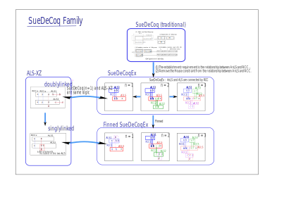

SueDeCoq のファミリー
SueDeCoqEx

SueDeCoqは、AnLS と ALS で構成する Locked です。
SueDeCoq(traditional) の定義ではセル配置、セル内の数字を用いていました。
これを一段階抽象化して、 ALS、AnLSを用いる SueDeCoqEx 新アルゴリズムを構成しました。
これにより、アルゴリズムが単純になり、かつ拡張しました。
また、セル配置をビット表現することで、実装コードが単純になりました。
正しいコード（バグ発生の防止、バグ発生の検出）も容易に構成できます。
もう一つの特徴として、SueDeCoqで求まる解は複雑な形状ですが、比較的高速です。
- SueDeCoqは、AnLS と ALS で構成する
- SueDeCoqEx : SueDeCoq(traditional)は、AnLSのn=2 のケースです。houseの制約を緩和します。
- SueDeCoqex n=2を、n=1、n=3 のケースに、拡張します。 n=3は、 Franken SueDeCoqEx と名付けます。
- SueDeCoqex n=1は、 ALS-XZ doublylinked と同じアルゴリズムです。 また、”Bent Naked Subset”のアルゴリズムも、実質的に同じです。(...おそらく）
- Finned SueDeCoq : SueDeCoqEx を fin付き に拡張します。 (FishのFinned Fish への拡張と、拡張の概念が似ています。）
- Finned SueDeCoqex n=1は、 ALS-XZ singlylinked と同じアルゴリズムです。
